install · linux/macOS
mediwatch.sh
sudo ./mediwatch.sh installRegisters the shim, then run medi-watch <command> [--option] from anywhere.
medi-watch predicts thirty-day hospital readmission for diabetic patients, end to end. The training and retraining loop beneath it runs on MLflow, Airflow, and Ray Tune, instrumented through Prometheus and Grafana.
Create the Python environment, then install the medi-watch command.
uv reads .python-version natively and downloads CPython 3.13.2 if it isn't already present.
# 1 - install uv (once)
curl -LsSf https://astral.sh/uv/install.sh | sh
exec $SHELL # reload PATH
# 2 - in the repo: uv reads .python-version automatically
cd medi-watch
uv venv # creates .venv on the pinned 3.13.2
source .venv/bin/activate
uv pip install -r requirements.txtrequirements.txt pins wheels (torch, xgboost, catboost, mlflow, …) and installs CPU-only by default: the CUDA lines are commented out. The pin set is mirrored in five sites that must stay in lockstep (see the requirements.txt header). After bumping anything, run python helpers/check_requirements_pins.py. A stale .venv-test/ built on 3.12.3 may exist. Delete or ignore it, since it does not match the pin.
With the environment active, one command puts medi-watch on your PATH. You also need Docker and Docker Compose v2. CUDA 12+ is only for the optional GPU / Driftly profile, since the core stack runs on CPU.
sudo ./mediwatch.sh installRegisters the shim, then run medi-watch <command> [--option] from anywhere.
# from the repository root, after running the install script:
medi-watch help # confirm the shim resolved
# 2 - green-light host, Python env, Docker, and infra/.env
medi-watch doctor
# 3 - bring the compose stack up (MLflow, Airflow, Ray, inference API, ...)
medi-watch init
# 4 - run the data-prep notebooks 01..05 on the host
medi-watch run
# 5 - orchestrate HPO, training, and champion registration through Airflow
medi-watch retrainAfter run builds the data-prep artifacts, retrain
drives the orchestrated HPO, training, and three-gate champion
registration through Airflow. The inference API then serves the
registered champion, and a fresh checkout has become a live thirty-day
readmission predictor. Everything past this point is operation, detail,
and depth.
Re-runs are safe. Install is idempotent: pointed at this checkout, it reports already installed and exits clean. Pointed at a different file or another checkout, it refuses and asks you to run ./mediwatch.sh install --uninstall first, which removes the shim from both canonical paths.
The mediwatch.sh shim is the single front door to the platform. Every lifecycle action, from a first-boot health check to tearing the whole stack down, is one verb.
The dispatcher is platform aware. It detects Linux, macOS, and Windows hosts, probes for an NVIDIA GPU with nvidia-smi, and silently merges the docker-compose.gpu.yml overlay onto Ray when accelerators are present. Run with no arguments inside a terminal and it enters an interactive lifecycle mode that walks you through init, train, and retrain in sequence. The current shim reports version 1.0.900.
| Command | What it does | Notable options |
|---|---|---|
| doctor | Audits host prerequisites (Docker, Compose v2, Git, Python), Python environment drift, and the infra/.env file, then offers an interactive autofix. | --yes auto-accept, --no-fix audit only |
| init | Runs the preflight audit, then brings the full Docker Compose stack up: Postgres, Airflow, MLflow, Ray, Prometheus, Grafana, the inference API, and Driftly. | --reset, --no-fix |
| install | Registers the medi-watch shim on your PATH under ~/.local/bin or /usr/local/bin. | --user no sudo, --uninstall |
| train · run | Executes the data-preparation notebooks 01 through 05 on the host: overview, cleaning, exploratory analysis, feature engineering, and the split or encode or scale stage. | --from, --to, --reset |
| retrain | Triggers the Airflow retrain_on_drift DAG, which runs tuning, training, and registration inside the containers (notebooks 06 through 08). | None |
| drift | Stages a simulated incoming batch and triggers the scheduled_drift_check DAG, which auto-retrains when the verdict is ALERT. | None |
| activate | Serve-only mode. Brings up the minimal stack of Postgres, MLflow, and the inference API, with no Airflow or Ray. | None |
| k8s · k8 | Applies the infra/k8s/*.yaml manifests to the current kubectl context. | --build, --reset |
| shutdown | Halts the running containers. | --reset wipes volumes, images, and data/, plus --yes |
| help | Prints usage. Also reachable as -h and --help. | None |
The pipeline is nine sequential notebooks. The first five prepare data and the last four search, train, select, and probe. An orchestrator, pipeline/run_pipeline.py, drives them all.
The orchestrator splits the run in two. Notebooks 01 through 05 run through nbconvert with an ExecutePreprocessor, because their output is the human-readable narrative of the data. Notebooks 06 through 08 instead call library functions directly, which runs roughly ten times faster than spinning up a Jupyter kernel for each. You can scope a run with --from and --to, wipe intermediate artifacts with --reset, or raise the per-cell --timeout for long fits.
| Notebook | Stage | Principal output |
|---|---|---|
| 01 overview | Problem statement and cohort introduction | Dataset summary, cohort statistics |
| 02 cleaning | Raw CSV to a cleaned cohort | data/cleaned.csv |
| 03 EDA | Systematic survey of distributions and target relationships | Effect sizes, confidence intervals |
| 04 feature engineering | Feature creation and enrichment | data/features.csv (drift reference) |
| 05 split · encode · scale | Train, validation, test partition and preprocessing | train_test.npz, OHE, scaler, selector |
| 06 tuning | Ray Tune search, five models | tuned_results.joblib |
| 07 training | Fit default and tuned-refit models | training_models.joblib, per-model thresholds |
| 08 conclusion | Leaderboard, champion pick, registration | final_model.joblib, MLflow @champion |
| 09 drift simulation | Synthesise five drift scenarios | data/incoming/{scenario}.csv |
Every family is fit twice: once with sensible defaults and once with the configuration the search judged best. All five carry an explicit treatment for the roughly eleven percent positive class.
Histogram tree method, CUDA device when a GPU is present, and scale_pos_weight set for the class imbalance.
Balanced auto class weights and a GPU task type when available, single-threaded for deterministic trials.
The sklearn estimator with balanced class weights, the interpretable baseline.
A balanced-weight forest, robust to feature scaling and a useful non-linear reference point.
A custom multilayer perceptron defined in helpers/models.py, trained with its own loop in helpers/mlp_train.py.
Models are ranked on validation F1, with AUC-ROC, AUC-PR, precision, and recall logged alongside. An overfit gap test flags any model whose train-to-validation drop exceeds the threshold.
Leakage is guarded structurally. Cross-validation uses a stratified GroupKFold grouped by patient_nbr, so every encounter for one patient lands in a single fold. A patient seen in training can never leak into validation.
Notebook 06 hands the search to a Ray cluster. Each of the five families gets fifty trials under an ASHA scheduler that prunes weak configurations early.
The orchestration lives in helpers/hpo_pipeline.py behind a single entry point, run_hpo, with the shared trial machinery in helpers/hpo.py. Search runs across one Ray head and two workers, each holding twenty gigabytes of memory and a four-gigabyte object store. The function detects an available GPU and routes XGBoost and CatBoost onto it, and it carries two fallbacks so the search degrades gracefully: a sequential cross-validation path when Ray is unavailable, and a deterministic grid when even that is not viable. Every knob, the trial count, the fold count, and the ASHA bracket parameters, is centralised in helpers/constants.py.
| Setting | Value | Meaning |
|---|---|---|
| NUM_SAMPLES | 50 | Trials per model family |
| N_SPLITS_HPO | 3 | Cross-validation folds per trial |
| scheduler | ASHA | Async successive halving, prunes underperformers early |
| SEED | 42 | One seed threaded through every random source |
| OVERFIT_THRESHOLD | 0.15 | Train-to-validation F1 gap that flags a model |
A new model does not become the champion because its F1 is higher. It becomes the champion only after clearing three independent gates, all of which must pass.
Notebook 08 and helpers/conclusion_pipeline.py assemble the leaderboard, pick the leading candidate by F1, evaluate it on the genuinely held-out test set, and register it to MLflow as medi-watch-readmission. The @champion alias is what the serving layer resolves at request time, so promotion is the act of moving that alias. The gates below stand between a strong candidate and that alias.
Only when all three gates pass does Airflow move the @champion alias and trigger a redeploy. The gate helpers, bootstrap_lift_ci and per_subgroup_recall, live in helpers/evaluation.py and are unit tested against hand-computed expectations.
medi-watch init stands up the entire platform as a single Docker Compose project on a shared bridge network, mlops-net.
One Postgres instance backs both the Airflow metadata database and the MLflow tracking store. A GPU overlay, docker-compose.gpu.yml, is merged automatically on NVIDIA hosts to reserve devices for the Ray nodes, and a docker-compose.minikube.yml overlay pins static addresses so the Airflow services do not collide with a minikube node. All configuration flows from infra/.env, which doctor validates before anything starts.
| Service | Port | Role |
|---|---|---|
| postgres | 5432 | Shared store: Airflow metadata and the MLflow backend |
| airflow (api · scheduler · dag-processor · triggerer) | 8080 | Orchestration of training and drift DAGs |
| mlflow | 5000 | Experiment tracking, model registry, artifact store |
| ray-head | 8265 · 10001 | Dashboard and client endpoint for distributed search |
| ray-worker (×2) | internal | Trial execution, twenty gigabytes of memory each |
| prometheus | 9090 | Scrapes Ray and inference metrics every fifteen seconds |
| grafana | 3003 | Dashboard UI with server-side PNG rendering |
| inference-api | 8002 | FastAPI scoring service resolving @champion |
| driftly-api | 8003 | On-demand drift metrics (Wasserstein, PSI, KL) |
| driftly-web | 3004 | React drift-explorer single-page app |
Airflow turns the manual pipeline into a self-healing loop. A scheduled drift check watches production, and an ALERT verdict triggers a full retrain without a human in the path.
Four drift and retrain DAGs cooperate. The retraining DAG runs the search, training, registration, and three-gate swap, then hands off to deployment. The scheduled check compares the champion's training reference against an incoming batch, computes PSI and KS verdicts, and fires the retrain on ALERT. An Evidently DAG produces the rich drift report, and a demo DAG fans all of this out across the five simulated scenarios. Airflow runs on a LocalExecutor against the shared Postgres, with a Fernet key encrypting stored connections.
| DAG | Trigger | Purpose |
|---|---|---|
| retrain_on_drift | Manual or drift ALERT | Search, train, register, run the three gates, swap the champion, redeploy |
| scheduled_drift_check | Manual or timed | PSI and KS on an incoming batch, with an automatic retrain on ALERT |
| evidently_drift | Manual or per scenario | Generate the Evidently DataDrift and DataSummary report, log to MLflow |
| drift_scenarios_demo | Manual | Fan out both drift DAGs across all five scenarios |
Two deployment paths. When CICD_PROVIDER is set, the retrain DAG fires a remote build through Jenkins, Azure Pipelines, or Google Cloud Build via helpers/cicd_trigger.py. Otherwise it falls back to a direct kubectl rollout restart against EKS or minikube. Either way the new pods re-resolve @champion on startup.
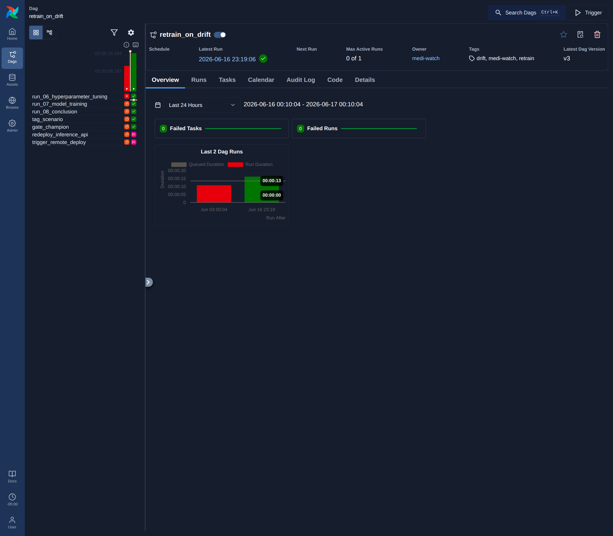
retrain_on_drift, fired by the mixed_severe drift ALERT on 2026-06-17. The grid records the chain run_06_hyperparameter_tuning → run_07_model_training → run_08_conclusion → gate_champion → trigger_remote_deploy, with no failed tasks. The drift check raised the alert, and Airflow opened this run without a human in the path.
The inference API loads medi-watch-readmission@champion from the MLflow registry and serves it on port 8002 with an MLflow-compatible request shape.
The full preprocessing pipeline, the one-hot encoder, the scaler, and the feature selector, travels with the model inside full_inference_pipeline.joblib, so the service applies exactly the transformations training applied. Identifier columns such as patient_nbr and encounter_id are stripped before scoring, request bodies are never logged, and an optional bearer token guards the endpoint. When the token is unset the service runs in trusted-network mode with audit logging of unauthenticated calls.
| Endpoint | Method | Purpose |
|---|---|---|
| /invocations | POST | Batch predict, returning class predictions and probabilities |
| /reload | POST | Flush the cached model so the next call re-resolves @champion |
| /healthz | GET | Liveness, with the loaded model's version and run id |
| /version | GET | Full model metadata and input schema |
| /metrics | GET | Prometheus counters, latency histogram, and score distribution |
| /docs · /redoc | GET | Auto-generated Swagger and ReDoc interfaces |
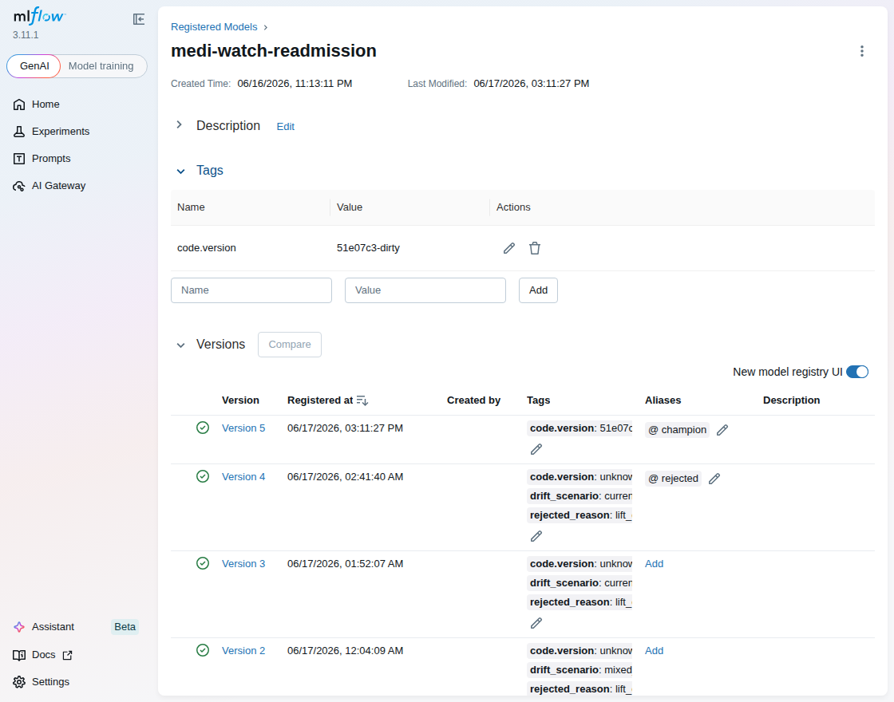
medi-watch-readmission version 5 carries the @champion alias, with versions 2 through 4 rejected by the lift gate. The inference service resolves models:/medi-watch-readmission@champion, so a promotion changes the served model without a redeploy of the code. GET /healthz reports the resolved name, alias, and version.Drift is watched from three angles: a scheduled statistical check inside Airflow, rich Evidently reports, and Driftly, an interactive dashboard for ad-hoc investigation.
The scheduled check computes the population stability index on categorical columns and the Kolmogorov-Smirnov statistic on numeric ones, with warn and alert thresholds drawn from helpers/constants.py. Evidently produces a full DataDrift and DataSummary report per scenario. Driftly, a React and FastAPI application on ports 8003 and 3004, computes Wasserstein distance, PSI, and KL divergence on demand against the champion's training cohort of 99,340 rows, storing each run in the shared Postgres mediwatch database so trends can be charted. Its thresholds are overridable through environment variables such as DRIFTLY_WASSERSTEIN_ALERT.
| Scenario | Perturbation | Champion F1 impact | Verdict |
|---|---|---|---|
| none | Unperturbed batch | −0.0007 | OK |
| coding_shift | Diagnosis codes vary | +0.0009 | ALERT |
| formulary_shift | Medication list changes | −0.0036 | ALERT |
| casemix_shift | Age and comorbidity mix | −0.0065 | ALERT |
| los_utilization_shift | Length-of-stay features | −0.0163 | ALERT |
| mixed_severe | Combined perturbations | −0.0191 | ALERT |
The verdicts trip on distribution change, not on harm. The champion proved robust to every perturbation, with the largest measured F1 drop near 0.019. Drift detection and model failure are distinct signals, and the platform reports them separately.
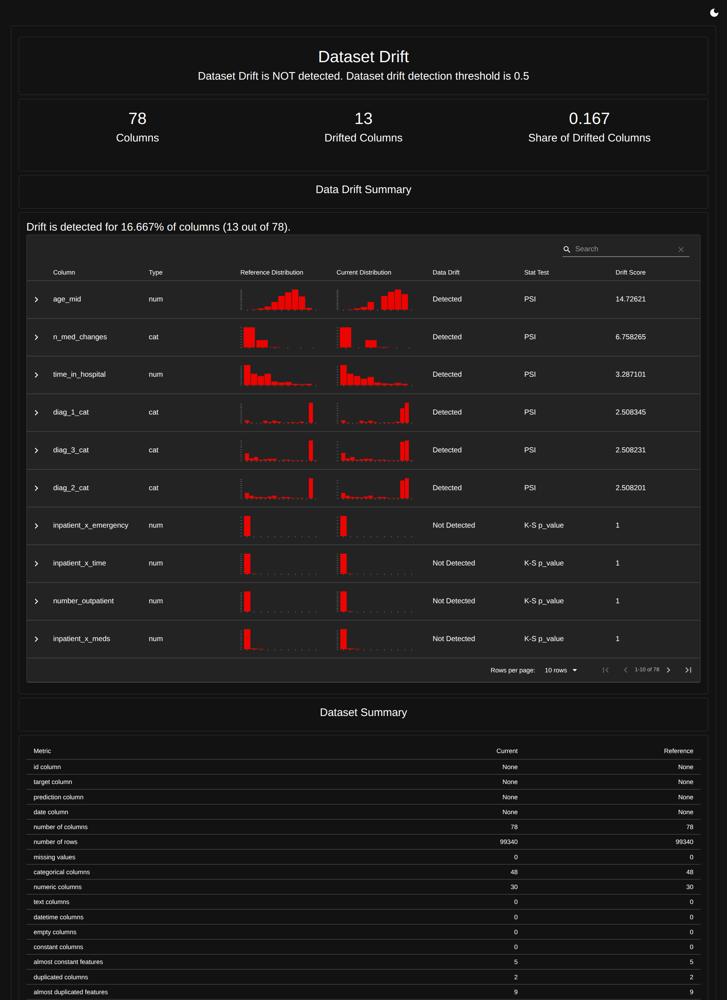
mixed_severe, 13 of 78 columns drifted. Population stability flags age_mid at 14.7, n_med_changes at 6.8, and the three diagnosis-category columns above 2.5, while the Kolmogorov-Smirnov test flags the continuous columns. The scheduled check returns ALERT on the same batch.| Column | Method | Statistic | Status |
|---|---|---|---|
| diag_1_cat / diag_2_cat / diag_3_cat | PSI | 3.89 | ALERT |
| time_in_hospital | PSI | 3.54 | ALERT |
| number_inpatient | KS | 0.67 | ALERT |
| num_lab_procedures | KS | 0.34 | ALERT |
| num_medications | KS | 0.30 | ALERT |
| number_emergency · number_diagnoses · num_procedures | KS / PSI | ≈0.00 | OK |
Verdict: ALERT. Population stability index and the Kolmogorov-Smirnov statistic run against a hard-coded set of columns, with warn and alert bands from helpers/constants.py. The reference is the champion training cohort of 99,340 rows. This verdict opened the retrain_on_drift run shown in the orchestration section.
Prometheus scrapes both the Ray cluster and the inference API. Grafana renders the result as an eight-panel model-KPI dashboard, with a second datasource reading MLflow directly.
The inference service exports a small, purposeful set of series: a request counter, a latency histogram exposing p50, p95, and p99, a histogram of predicted probabilities, a twenty-four-hour rows-scored gauge, and a counter of champion reloads. Grafana joins these against MLflow to chart the champion's age in days, the registered-version timeline, and validation F1 across every training run. The dashboard JSON ships in the repository and renders server-side to PNG through the image-renderer service, so the monitoring evidence under infra/monitoring/grafana/ is reproducible.
inference_latency_seconds as a histogram. Observed near 20ms at p50 and 49ms at p99.
inference_requests_total and a 24h rows-scored gauge for volume and SLA tracking.
A histogram of predicted readmission probability, surfacing output drift at a glance.
Days since the current @champion was promoted, read straight from the registry.
Every registered version with its promotion timestamp.
F1 for every training run, the long view of whether the model is improving.
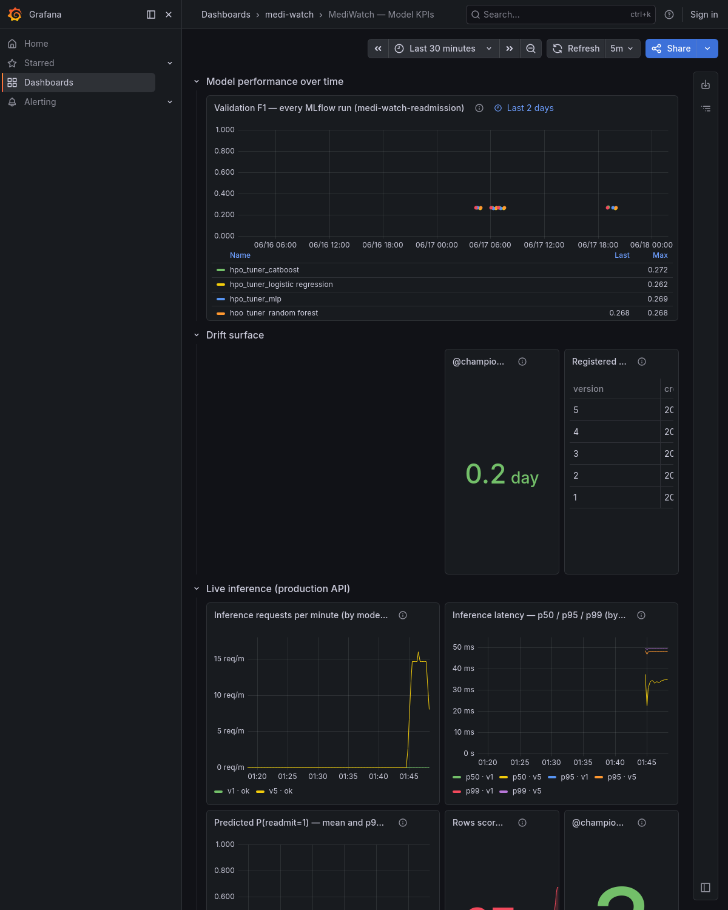
infra/monitoring/grafana/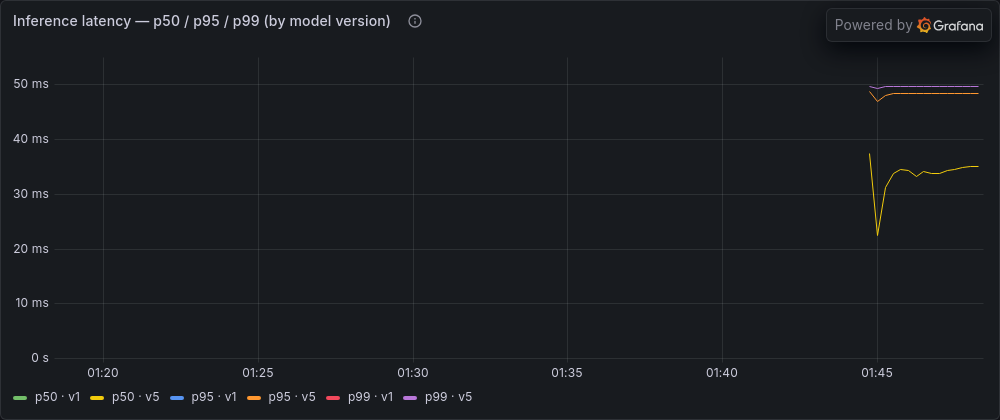
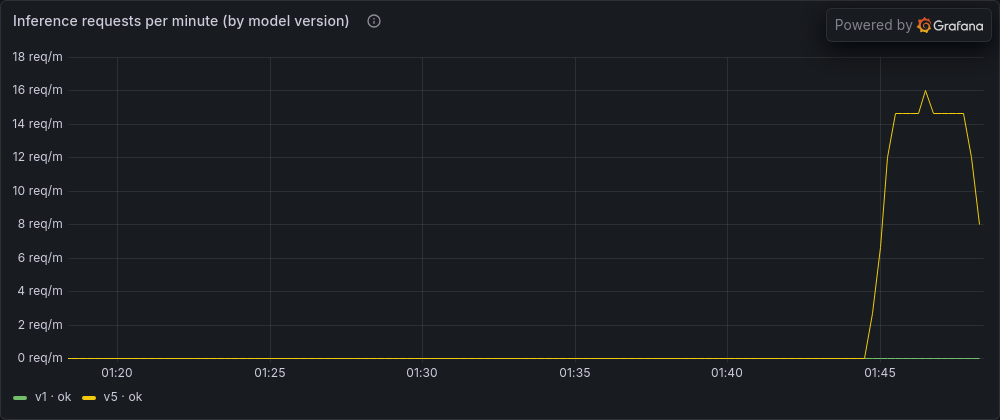
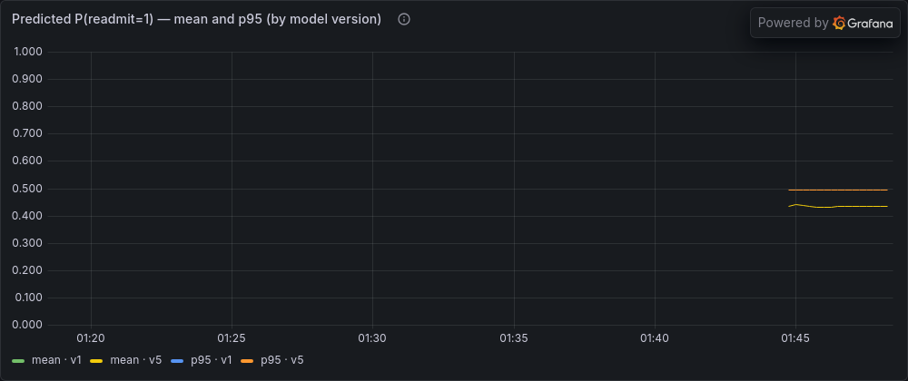
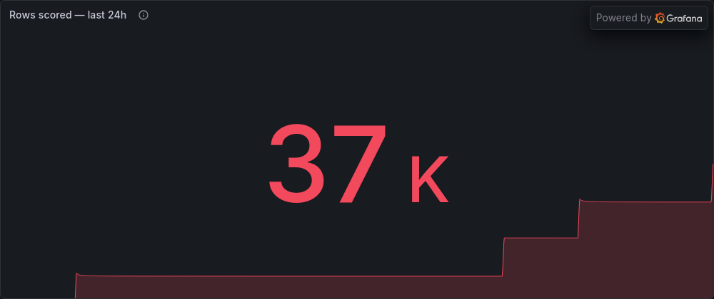
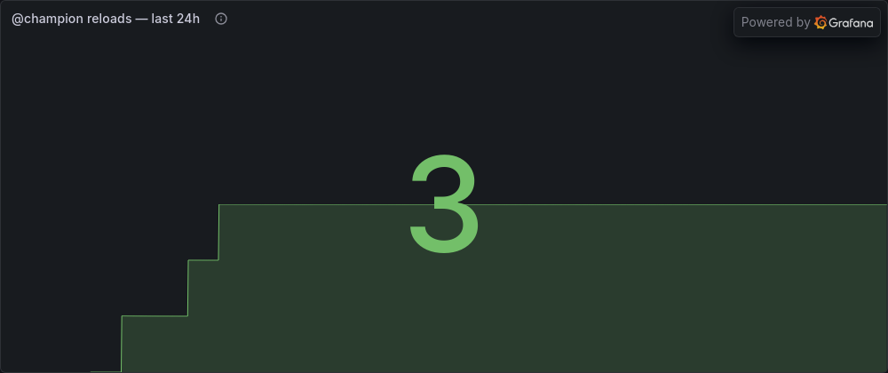
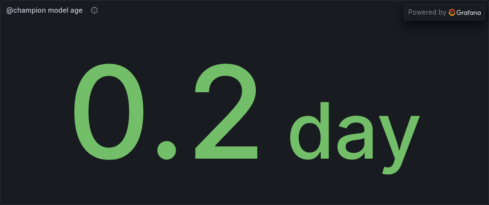
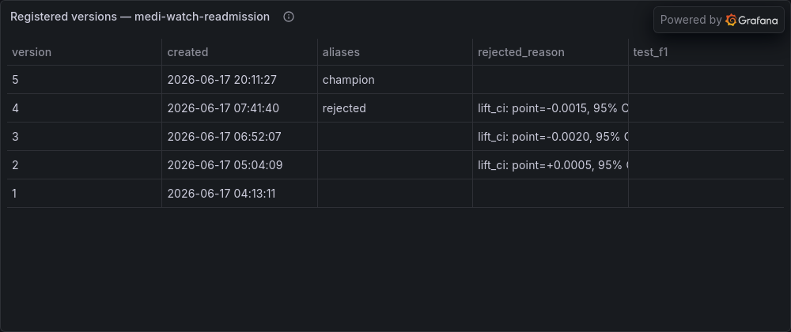
Twenty-two test modules cover the helpers library, the pipeline stages, the promotion gates, and even the syntactic validity of the Airflow DAGs.
The suite is organised in tiers. Pure tests run on in-memory fixtures against hand-computed expectations. Pure-ish tests run real sklearn and PyTorch on a miniature cohort, CPU-only. Impure tests mock the external boundaries, MLflow, Ray, Postgres, and nvidia-smi, while still exercising the deterministic fallbacks for real. A shared conftest.py seeds every random source and synthesises a small Diabetes-130 cohort, so the whole suite is deterministic. One module, test_check_requirements_pins.py, even guards the dependency pins across the sites that must stay in lockstep, and another, test_pipeline_parity.py, asserts that the training and inference pipelines produce identical output.
Only the inference API is promoted to Kubernetes. Airflow, Ray, and MLflow remain in Compose, because the scoring service is the only component that must scale with production traffic.
The manifests in infra/k8s/ declare a two-replica deployment behind a service, with a horizontal autoscaler that ranges from two to six pods and a rolling-update strategy that holds availability at full during a swap. Three first-class CI pipelines ship in infra/ci-cd/, one each for Jenkins, Azure Pipelines, and Google Cloud Build, every one of them building the image, pushing to its registry, and applying the manifests to its cluster. The AWS path adds an ECR push and an EKS rollout through infra/aws/deploy.sh, while deploy-local.sh covers the minikube case.
Build, test, push to ECR, and apply to EKS.
Smoke test, build, push to ACR, deploy to AKS.
Build, push to Artifact Registry, deploy to GKE.
The model predicts whether a diabetic patient will be readmitted within thirty days, trained on the UCI Diabetes 130-US Hospitals dataset spanning 1999 to 2008.
The raw data holds 101,766 encounters, reduced to a training cohort of 99,340 after cleaning. The target is binary and imbalanced, with roughly eleven percent of encounters being a readmission within thirty days, which is why every model carries a class-weight treatment and why F1 rather than accuracy is the selection metric. Feature engineering yields a matrix of demographics, diagnoses, medications, lab values, admission and discharge detail, and a per-patient history of prior encounters. That engineered matrix doubles as the reference distribution against which all drift is measured.
The notebooks are thin. The substance lives in helpers/, a tested Python library that the notebooks, the Airflow DAGs, and the inference API all import in common.
This is what lets notebooks 06 through 08 run as fast library calls and lets a DAG run the same training unattended. The same model_loading module that the notebooks use to inspect a model is the one the inference API uses to serve it, so there is a single source of truth for how a model is reconstituted. The modules below are the load-bearing ones.
Every tunable knob in one place: the seed, the gate thresholds, the search parameters, and the drift cut-offs.
Builds any of the five estimator families and computes the shared metric set.
Orchestrates the Ray Tune search with GPU detection and graceful fallbacks.
Assembles the leaderboard, picks the champion, and registers it with the @champion alias.
The bootstrap-lift and subgroup-recall checks that guard every promotion.
Wasserstein, KL, and PSI, shared by the scheduled check and the Driftly dashboard.
Reconstitutes a model from joblib or the registry. Shared by notebooks and the API.
Thin MLflow wrappers for logging estimators, datasets, and run metadata.
Verifies the dependency pins agree across every site that declares them.
Each module has a matching test_*.py beside it under test/.
helpers/models.py at fit time and the inference API at request time, and it gives the model the longitudinal signal that a single-row snapshot cannot carry.helpers/evaluation.py is currently a guardrail: it can refuse a promotion that would harm a subgroup, but it does not repair disparity. The enhancement is to move from a single global decision threshold to subgroup-calibrated thresholds (or a constrained-optimization post-processing step such as equalized-odds adjustment), selected on validation data and re-validated by the existing per_subgroup_recall check. This moves the equity gate from refusing harm to actively reducing disparity, with that check confirming the change worked.helpers/model_loading.py is already the single source of truth for loading a champion, so the streaming worker reuses it unchanged. Only the transport in front of it is new.bootstrap_lift_ci) is reused to decide the online winner, so the @champion alias only moves once the online evidence clears the same statistical bar as an offline swap.docker compose stack and the self-managed Airflow are ideal for a reproducible local capstone, but production wants managed primitives. The roadmap migrates the DAGs to a managed scheduler (Cloud Composer, MWAA, or Astronomer) and the services to the Kubernetes manifests already sketched in Section 12, turning the Compose network into Deployments, Services, and CronJobs, with secrets and autoscaling handled by the platform instead of by hand.Fairness-aware thresholding and the feature store reuse modules that already exist (evaluation.py, models.py) and need no new infrastructure, so they ship first and de-risk the rest.
Streaming inference, live A/B promotion, and managed orchestration each introduce a new runtime dependency, so they follow once the data and fairness layers are settled.
None of these require rewriting the core. Each reuses the existing helpers/ modules and extends the system in place.